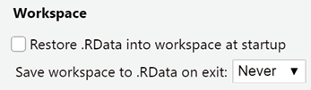
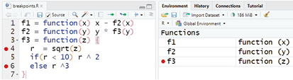
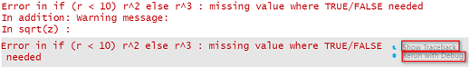
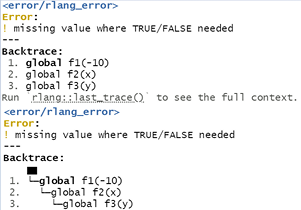
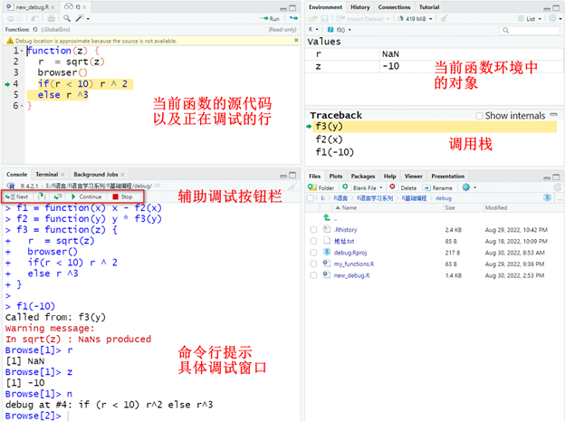
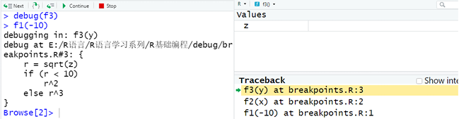
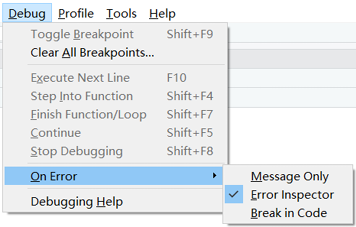

B 错误与调试
调试代码和修正错误往往很耗时。本附录按照教材的顺序，介绍解决报错的一般策略、定位错误的交互式工具，以及让函数更加稳健的异常处理方法。
B.1 解决报错的一般策略
遇到报错时，可以依次采取以下做法：
- 仔细阅读报错信息，并用完整的错误消息搜索解决方案；
- 在搜索引擎、RStudio Community 或 Stack Overflow 中检索关键词；
- 重启 R 会话，排除工作空间中旧对象造成的干扰；
- 使用
reprex包构造最小可重复示例，再向他人提问。
为了避免每次启动 R 时自动恢复旧工作空间，可在 RStudio 中依次打开 Tools → Global Options → General → Workspace，将启动时恢复 .RData 设为“Never”，并取消退出时保存工作空间。

Figure B.1: 设置启动时不保存和恢复历史工作空间
B.2 错误调试技术
当我们不知道错误来自哪一行时，一般需要先运行代码，在可疑位置暂停，然后逐句执行并检查中间对象。虽然插入 print() 或 cat() 也能查看中间结果，但调用栈和交互式调试工具通常更高效。
B.2.1 设置断点
在 RStudio 源代码编辑器中，单击行号左侧即可设置断点。保存并 Source 文件后，函数对象会被注入跟踪代码；程序运行到断点处时进入调试模式。

Figure B.2: 在 RStudio 编辑器中设置断点
B.2.2 使用 traceback() 查看调用栈
下面的三个函数形成 f1() → f2() → f3() 的调用链。输入负数后，sqrt() 产生 NaN，随后 if 无法获得明确的逻辑值，因此程序报错。
Code
# f1() 调用 f2()
f1 <- function(x) x - f2(x)
# f2() 再调用 f3()
f2 <- function(y) y * f3(y)
# 错误最终发生在 f3() 的计算过程中
f3 <- function(z) {
r <- sqrt(z)
if (r < 10) r^2 else r^3
}
# 负数开平方会触发后续错误
f1(-10)
Figure B.3: 函数调用链中的报错
报错后立即运行 traceback()，可以查看错误发生前的函数调用序列。调用栈通常从下向上阅读：
Code
# 必须在报错后立即运行
traceback()
# 3: f3(y) at #1
# 2: f2(x) at #1
# 1: f1(-10)教材还介绍了 rlang 提供的增强型错误回溯：
Code
# 让 rlang 保存错误调用栈
options(error = rlang::entrace)
# 重新触发错误
f1(-10)
# 查看最近一次错误及其完整调用栈
rlang::last_error()
rlang::last_trace()
Figure B.4: rlang 提供的错误信息与调用回溯
B.2.3 使用 browser() 在指定位置暂停
把 browser() 插入函数内部，程序运行到该位置时会进入调试模式：
Code
f3 <- function(z) {
r <- sqrt(z)
# 程序运行到这里时暂停，便于查看 r 和 z
browser()
if (r < 10) r^2 else r^3
}
f1(-10)
Figure B.5: browser() 调试模式及界面说明
进入调试模式后，控制台提示符变为 Browse[1]>。常用命令包括：
n（Next）：执行下一条语句；c（Continue）：继续运行到下一断点；s（Step into）：进入函数调用；f（Finish）：完成当前循环或函数；where：显示调用位置；Q（Stop）：退出调试器。
B.2.4 使用 debug() 进入函数内部
对于不便直接修改的函数，可以用 debug() 标记函数，在下次调用时自动进入调试模式。
Code
# 标记 f3()，下一次调用时进入调试模式
debug(f3)
f1(-10)
# 调试结束后取消标记，否则每次调用都会进入调试模式
undebug(f3)
# 如果只想调试下一次调用，也可以使用 debugonce(f3)
Figure B.6: debug() 调试模式
RStudio 还可以在发生错误时自动进入调试模式。依次打开 Debug → On Error，将选项改为 Break in Code。

Figure B.7: 设置遇到错误时自动进入调试模式
如果希望按错误的方式调试警告，可以临时设置 options(warn = 2)，把警告转换为错误。完成调试后应恢复原选项。
B.3 异常处理
异常处理的目标，是让函数更稳健，并把清楚的信息传递给使用者。R 中常见的条件包括：
- 错误（Error）：由
stop()或rlang::abort()触发并中止执行； - 警告（Warning）：由
warning()或rlang::warn()提示潜在问题； - 消息（Message）：由
message()或rlang::inform()输出说明信息。
B.3.1 使用 tryCatch() 捕获异常
教材以除法函数为例：非数值输入触发错误，分母为 0 时触发警告。
Code
# 定义一个带输入检查的除法函数
div <- function(m, n) {
# 分子或分母不是数值时，中止执行
if (!is.numeric(m) | !is.numeric(n)) {
stop("错误：分子或分母不是数值！")
} else if (n == 0) {
# 分母为 0 时发出警告，并返回 Inf
warning("警告：分母是 0！")
Inf
} else {
# 输入正常时执行除法
m / n
}
}
div(3, 2)
#> [1] 1.5tryCatch() 的 expr 是需要执行的表达式；error 和 warning 分别指定捕获错误与警告后的处理函数；finally 指定无论是否出现异常都要执行的表达式。
Code
# 正常输入：直接返回计算结果
tryCatch(
div(3, 2),
error = function(err) err,
warning = function(warn) cat(paste0(warn, "小心结果是 Inf！"))
)
#> [1] 1.5
# 非数值输入：捕获错误对象，而不中断整份文档的运行
tryCatch(
div("3", 2),
error = function(err) err,
warning = function(warn) cat(paste0(warn, "小心结果是 Inf！"))
)
#> <simpleError in div("3", 2): 错误：分子或分母不是数值！>
# 分母为 0：捕获警告并追加提示
tryCatch(
div(3, 0),
error = function(err) err,
warning = function(warn) cat(paste0(warn, "小心结果是 Inf！"))
)
#> simpleWarning in div(3, 0): 警告：分母是 0！
#> 小心结果是 Inf！B.3.2 使用 rlang 构造带类别的错误
下面的例子先生成随机数，再计算对数。如果随机数不是正数，就用 rlang::abort() 抛出带有类别和原始数值的错误对象。
Code
# 生成随机数；若结果不是正数，则抛出自定义错误
sim_value <- function() {
val <- rnorm(1)
if (val <= 0) {
rlang::abort(
message = "返回值不是正数！",
class = "模拟值错误",
val = val
)
} else {
val
}
}
# 根据错误类别生成更具体的信息
sim_value_handler <- function(err) {
msg <- "无法计算值！"
if (inherits(err, "模拟值错误")) {
msg <- paste0(msg, "`sim_value()` 函数生成的数值为 ", err$val)
}
rlang::abort(msg, class = "模拟值错误")
}
# 捕获随机数生成阶段的异常，再计算对数
log_value <- function() {
x <- tryCatch(sim_value(), error = sim_value_handler)
log(x)
}
# 固定随机种子，使示例稳定触发负值异常
set.seed(123)
log_value()带类别的错误便于处理器识别错误来源，也可以在错误对象中保存额外信息。
B.3.3 在 purrr 迭代中处理错误
purrr 提供三个用于包装函数的“副词”：
safely()：同时返回result与error；quietly()：返回结果、输出、消息与警告；possibly()：出错时返回预先指定的替代值。
下面用 safely() 包装 log()。即使第一个输入无法取对数，后续输入仍会继续计算。
Code
# 包装 log()：出错时以 NA_real_ 作为结果
safe_log <- purrr::safely(log, otherwise = NA_real_)
# 逐个计算，并把嵌套列表整理为 result 与 error 两部分
list("a", 10, 100) |>
purrr::map(safe_log) |>
purrr::transpose() |>
purrr::simplify_all()
#> $result
#> [1] NA 2.302585 4.605170
#>
#> $error
#> $error[[1]]
#> <simpleError in .f(...): non-numeric argument to mathematical function>
#>
#> $error[[2]]
#> NULL
#>
#> $error[[3]]
#> NULL